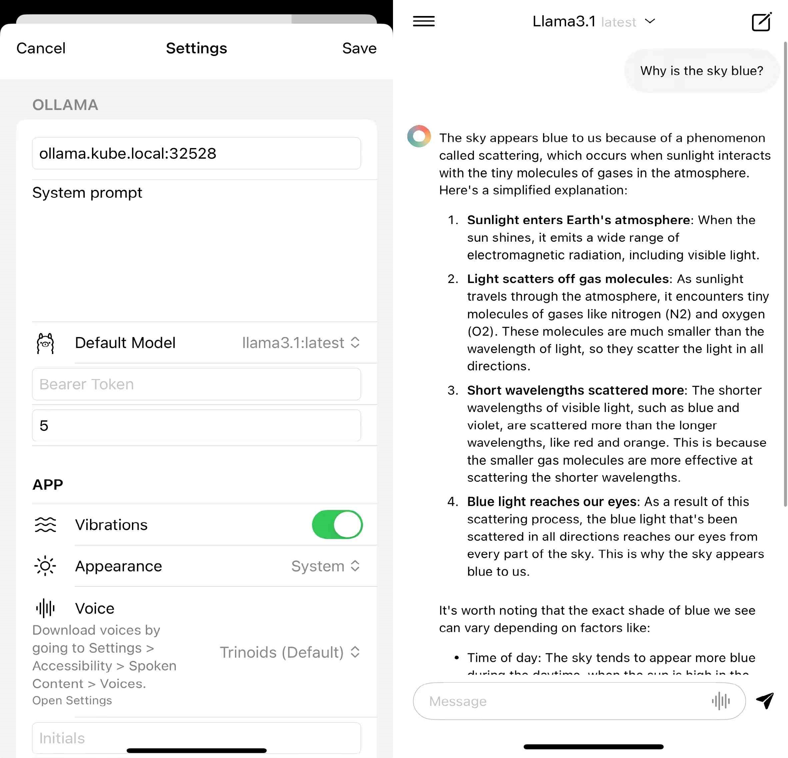

Setting Up an LLM Server on Your Home Kubernetes Cluster#
The new Llama 3.1 is out, and the fact that a smaller quantized version of the model can be easily deployed in a home environment is quite exciting. If you have some spare computing resources such as a GPU, I will totally recommend deploying an LLM server on your PC or home server for good reasons. On the one hand, you no longer have to pay a subscription fee for a limited-usage service if you primarily use it for less complex tasks. On the other hand, smaller models offer the advantages of better energy efficiency, privacy, stable availability, and the potential of custom integration with other local services like smart home assistants.
In this blog post, I will go through setting up an LLM server on my home Kubernetes cluster. I will be using Ollama in a container to host the LLM service, and optionally, deploy a client web interface with Open WebUI. While the UI is not a requirement to my own needs, it is nice to have since you can easily share the service with others in the same network. Therefore I will be deploying an Open WebUI instance alongside as well. My Kubernetes cluster with version 1.30 is running on multiple Ubuntu 24.04 Server nodes.
A quick reminder: for those planning to use LLMs on a PC or seeking a simpler installation on a server with Docker, there are more straightforward options available that don’t require a more complex Kubernetes configuration. Ollama does provide native installers for macOS, Linux, and Windows. Alternatively, spawning a Docker container directly is another option for local deployment. It’s also worth noting that this guide demonstrates the use of CUDA capable GPUs from NVIDIA. Setting up GPUs from other vendors may require different steps, which won’t be covered here.
For the audience of this post, I will assume you already have a Kubernetes cluster, if not, you may check out my other post for setting one up.
In this guide, we’ll cover the following tasks to set up an LLM server on your home Kubernetes cluster:
Configuring a worker node for GPU support
configuring your Kubernetes cluster to use the GPUs
deploying Ollama on the cluster
optionally, deploying Open WebUI
Setting Up a GPU Supported Node (NVIDIA)#
The first step is to ensure that your worker node has GPU properly configured. While Ollama’s LLM serving part doesn’t strictly require a GPU to run its model hosting service, having one is crucial for efficient LLM inference. Without a GPU, processing times can become painfully long. In this guide, we’ll focus on setting up NVIDIA GPUs, as they’re the most common choice for deep learning tasks.
0. What do we need to install from NVIDIA?
Please check if you have a CUDA capable GPU; and check if the drivers supports your operating system. For our purpose, we’ll follow the recommended approach of installing only the NVIDIA drivers.
1. Check If the GPU is Recognized by Your Host Node
You need to ensure that the GPU is recognized by your host node, This step confirms that your hardware setup is correct.
lspci | grep -i nvidia
If your GPU is properly connected, you should see at least one line of output displaying your GPU’s name and version, even if you have not installed a driver. If you don’t see any output, then you may need to check your hardware connection or GPU passthrough settings if you’re using a virtual machine.
2*. Clean Out all NVIDIA Related Packages
To avoid potential package conflicts, it’s a good idea to remove any existing NVIDIA packages before installing the driver. This step assumes your GPU will be dedicated to the Kubernetes cluster only.
sudo apt-get --purge remove "*cuda*" "*cublas*" "*cufft*" "*cufile*" "*curand*" "*cusolver*" "*cusparse*" "*gds-tools*" "*npp*" "*nvjpeg*" "nsight*" "*nvvm*"
sudo apt-get --purge remove "*nvidia*" "libxnvctrl*"
sudo apt-get autoremove
3 Install the NVIDIA Drivers (Canonical’s Installation and Using the APT Package Manger)
The recommended way of installing NVIDIA drivers on a Ubuntu system is to use the Ubuntu-Drivers Tool especially when your system uses Secure Boot.
sudo ubuntu-drivers list --gpgpu
sudo ubuntu-drivers install --gpgpu nvidia:535-server
nvidia:535-server is the version of the driver you want to install, 535-server means the server version of the 535 branch. Replace this with the version of the driver you want to install. The driver version can be found by running the first command.
It should work out most of the time. Unfortunately for me, I might have been caught in temporary compatibility issues. I had to install the driver differently using the APT Package Manger. You may use the download builder to find the correct driver version for your system.
wget https://developer.download.nvidia.com/compute/cuda/repos/ubuntu2404/x86_64/cuda-keyring_1.1-1_all.deb
sudo dpkg -i cuda-keyring_1.1-1_all.deb
sudo apt-get update
sudo apt-get install -y nvidia-driver-535-server
sudo apt-get install -y cuda-drivers-535
sudo reboot
4 Final Check for Driver Status
After installation and reboot, verify that the driver is properly installed.
dpkg -l | grep nvidia-driver
nvidia-smi
dpkg -l | grep nvidia-driver checks if there is a driver installed. nvidia-smi command should produce output similar to this.
This output confirms that your NVIDIA driver is installed and functioning correctly.
Installing NVIDIA Container Toolkit#
Having the driver installed could only allow us to use GPUs natively on the host system. We still need to install NVIDIA Container Toolkit, which enables users to run GPU-enabled containers. We can install it using the following steps.
curl -fsSL https://nvidia.github.io/libnvidia-container/gpgkey | sudo gpg --dearmor -o /usr/share/keyrings/nvidia-container-toolkit-keyring.gpg \
&& curl -s -L https://nvidia.github.io/libnvidia-container/stable/deb/nvidia-container-toolkit.list | \
sed 's#deb https://#deb [signed-by=/usr/share/keyrings/nvidia-container-toolkit-keyring.gpg] https://#g' | \
sudo tee /etc/apt/sources.list.d/nvidia-container-toolkit.list
We first add the NVIDIA repository to your system and sets up the GPG key for package verification.
sudo apt-get update
sudo apt-get install -y nvidia-container-toolkit
We then update package index and install the NVIDIA Container Toolkit.
sudo nvidia-ctk runtime configure --runtime=containerd
sudo nano /etc/containerd/config.toml
...
[plugins]
[plugins."io.containerd.grpc.v1.cri"]
[plugins."io.containerd.grpc.v1.cri".containerd]
default_runtime_name = "nvidia"
We configure the runtime to use the NVIDIA Runtime by default by editing the containerd configuration file to set the default runtime name to ‘nvidia’.
sudo systemctl restart containerd
We have to restart the containerd service to apply the changes.
Installing NVIDIA GPU Operator in Kubernetes#
While many would choose to install NVIDIA device plugin for basic GPU usage in the Kubernetes environment, NVIDIA GPU Operator provides a more comprehensive solution to use GPUs in Kubernetes. NVIDIA GPU Operator is a plugin that you deploy to your Kubernetes cluster to automate the management of all NVIDIA software components needed to provision GPU. In addition, it allows advanced configuration such as time-slicing, which enables workloads that are scheduled on oversubscribed GPUs to interleave with one another.
In this blog post, we’ll go through the process of installing the NVIDIA GPU Operator in a Kubernetes cluster.
1*. Installing Helm
Helm is a package manager for Kubernetes that simplifies the deployment and management of applications by using charts to pre-configure Kubernetes resources. As NVIDIA’s official guide uses Helm to install the GPU Operator, we will follow and use Helm as well.
If you haven’t installed Helm yet, this is snipped from the official Helm installation documentation:
curl https://baltocdn.com/helm/signing.asc | gpg --dearmor | sudo tee /usr/share/keyrings/helm.gpg > /dev/null
sudo apt-get install apt-transport-https --yes
echo "deb [arch=$(dpkg --print-architecture) signed-by=/usr/share/keyrings/helm.gpg] https://baltocdn.com/helm/stable/debian/ all main" | sudo tee /etc/apt/sources.list.d/helm-stable-debian.list
sudo apt-get update
sudo apt-get install helm
This series of commands adds the Helm repository, installs necessary dependencies, and finally installs Helm itself.
2. Installing NVIDIA GPU Operator
Now that we have Helm installed, we can use it to install NVIDIA GPU Operator.
# install GPU operator:
helm install --wait --generate-name \
-n gpu-operator --create-namespace \
nvidia/gpu-operator \
--set driver.enabled=false \
--set toolkit.enabled=false \
--timeout 15m
As we have pre-installed the NVIDIA GPU driver and NVIDIA Container toolkit manually before, we should disable the installation of the driver and toolkit in the GPU Operator setup by setting driver.enabled and toolkit.enabled to false.
If you have not installed both of them, you may set them to true, which automatically installs the driver and toolkit and configures the runtime for you. The reason why I still went through those steps earlier here is that no matter what method you use, you will need to install the driver and toolkit explicitly or implicitly. For those who do not use NVIDIA GPU operator, you may install an alternative instead.
kubectl get all -n gpu-operator
You should expect all pods are running or complete as their status.
3. Label the GPU Nodes for Affinity
The final Kubernetes configuration is to label the nodes that have GPUs. This helps in scheduling GPU workloads to the correct nodes. Here’s how you can do it.
kubectl label nodes k8s-worker-2 accelerator=nvidia-3060-12GB
kubectl get nodes --show-labels
Running a GPU Enabled Container (For Testing)#
Although this section is not directly related to setting up a LLM server, we can quickly abstract the necessary settings for GPU setup in Kubernetes by running a simple container with GPU as a resource. This approach, along with some examinations we can perform, will help us check for GPU utilization and ensure our cluster is properly configured for GPU workloads.
1. Check If Your GPU Is seen in Kubernetes resource
First, we need to verify if Kubernetes can detect your GPU. Run the following command.
kubectl describe node k8s-worker-2
# or
kubectl describe node k8s-worker-2 | grep nvidia.com/gpu
You should expect to get multiple lines of nvidia.com/gpu: 1 in the output. You may have multiple GPUs, which will show nvidia.com/gpu: 2. or higher. If you don’t see anything, that means your GPU isn’t properly configured or recognized by Kubernetes.
2. Deploy a Simple Container with GPU
Now, let’s deploy a basic container with a GPU that only runs the nvidia-smi command. This will help us verify if the GPU is properly recognized within the container.
apiVersion: v1
kind: Pod
metadata:
name: gpu-test
spec:
affinity:
nodeAffinity:
requiredDuringSchedulingIgnoredDuringExecution:
nodeSelectorTerms:
- matchExpressions:
- key: accelerator
operator: In
values:
- nvidia-3060-12GB
containers:
- name: gpu-test
image: nvidia/cuda:12.1.0-base-ubi8
command: ["nvidia-smi"]
resources:
limits:
nvidia.com/gpu: 1
It is common to encounter incompatibility issue between the host driver and CUDA version in the container, e.g, requirement error: unsatisfied condition: cuda>=12.5, please update your driver to a newer version, or use an earlier cuda container: unknown. The NVIDIA driver reports a maximum version of CUDA supported (upper right in the table) and can run applications built with CUDA Toolkits up to that version. Ensure you supply the compatible CUDA version in the container image tag or update your driver to a newer version.
If everything goes right, you should expect to see the same table produced by nvidia-smi in the container log. To check the log run kubectl logs -c <container-name> -p <pod-name>.
This should conclude the basic setup of using GPUs in Kubernetes.
GPU Sharing with Nvidia GPU Operator#
So far your NVIDIA GPUs can only be assigned to a single container instance, which is a significant limitation. This setup means your GPU will be in an idle state most of the time and dedicated to a single service. As we learned earlier, the NVIDIA GPU Operator can be used to enable GPU sharing, allowing multiple workloads to share a single GPU. We will configure the GPU Operator to enable GPU sharing with time slicing.
Setting up GPU sharing is rather simple. All you need to do is add a ConfigMap to the namespace used by the GPU operator. The device plugin will then pick up this ConfigMap and automatically configure GPU time slicing for you.
Here’s an example configuration for GPU time-slicing.
apiVersion: v1
kind: ConfigMap
metadata:
name: time-slicing-config-all
data:
any: |-
version: v1
flags:
migStrategy: none
sharing:
timeSlicing:
resources:
- name: nvidia.com/gpu
replicas: 4
By applying this configuration, you’re essentially telling the GPU Operator to divide each GPU into 4 virtual GPUs (i.e., scale resource with name nvidia.com/gpu to 4 replicas). This allows up to 4 containers to share a single physical GPU. More configurations related to the time slicing feature can be found in the official guide.
Setting Up Ollama on Kubernetes#
Ollama has been a very user-friendly tool that allows you to run LLMs locally. Its simplicity of pulling and running popular models with Ollama makes it accessible for everyone. Although Ollama may have yet to have the robustness and scalability for a large scale production serving, but it is a perfect choice for home use. Here we will go through setting up Ollama on Kubernetes.
1. Create a new Namespace
First, let’s create a dedicated namespace for our Ollama deployment.
apiVersion: "v1"
kind: Namespace
metadata:
name: ns-ollama
1. Create Deployment
Now, let’s set up the deployment for Ollama.
---
apiVersion: apps/v1
kind: Deployment
metadata:
name: ollama-deployment
namespace: ns-ollama
spec:
replicas: 2
selector:
matchLabels:
app: ollama
template:
metadata:
labels:
app: ollama
spec:
affinity:
nodeAffinity:
requiredDuringSchedulingIgnoredDuringExecution:
nodeSelectorTerms:
- matchExpressions:
- key: accelerator
operator: In
values:
- nvidia-3060-12GB
containers:
- name: ollama
image: ollama/ollama:latest
ports:
- containerPort: 11434
command: ["/bin/sh"]
args: ["-c", "ollama serve"] # Removed --gpus=all flag
resources:
limits:
nvidia.com/gpu: 1
cpu: 16
memory: "48Gi"
requests:
cpu: 8
memory: "24Gi"
volumeMounts:
- name: ollama-data
mountPath: /root/.ollama
volumes:
- name: ollama-data
emptyDir: {}
---
apiVersion: v1
kind: Service
metadata:
name: ollama-service
namespace: ns-ollama
spec:
selector:
app: ollama
ports:
- protocol: TCP
port: 11434
targetPort: 11434
nodeAffinity ensures that the Ollama pods are scheduled on nodes with NVIDIA GeForce RTX 3060 GPUs. Also to allocate GPUs to the pods, you need to specify nvidia.com/gpu: 1 in the resources section.
It seems the newer release last month (2024-7) of Ollama supports parallel requests, which means it might not be necessary to run multiple instances for cutting down resource allocation. But we will be running two replicas anyway for this guide since we also want to test out whether GPU time slicing works.
According to the discussion and Meta’s requirements recommendation, you should expect to allocate at least 8 cores CPU, 16G of RAM and a decent GPU with 8G+ VRAM for a quantized 7B models for a decent experience. I might be running multiple models, so I allocate more RAM limit to each pod.
For simplicity, we will use ephemeral volumes in this guide instead. But I recommend that you should use persistent volume for your data as models can be large in size and there is user data to keep as well. Also shared volume is handy in this case as you do not want to download the same models in every pod.
As both pods seem to be running, we can log into the each container and run nvidia-smi manually, here we go, one GPU is now allocated to 2 pods.
3. Pulling Ollama Models
Specific models in ollama need to be pulled manually before using them. There are two ways, one is through the command line interface in the pod container, and the other is through the REST API.
ollama pull llama3.1
For REST API, you need to ensure you have configured an externally accessible service point, I am using Ingress with NodePort for this guide. Please refer to this section below for setting up Ingress.
curl http://ollama.kube.local:32528/api/pull -d '{
"name": "llama3.1"
}'
Setting Up Open WebUI for Ollama#
We then want to set up a web interface so that general user can interact with the LLM server. Open WebUI is a popular choice that supports Ollama.
1. Create a new Namespace
First, we’ll create a dedicated namespace for our Open WebUI deployment.
apiVersion: v1
kind: Namespace
metadata:
name: open-webui
Next, we’ll set up the deployment and a service for Open WebUI.
1. Create Deployment
---
apiVersion: apps/v1
kind: Deployment
metadata:
name: open-webui-deployment
namespace: open-webui
spec:
replicas: 1
selector:
matchLabels:
app: open-webui
template:
metadata:
labels:
app: open-webui
spec:
affinity:
nodeAffinity:
requiredDuringSchedulingIgnoredDuringExecution:
nodeSelectorTerms:
- matchExpressions:
- key: kubernetes.io/hostname
operator: In
values:
- k8s-worker-2
containers:
- name: open-webui
image: open-webui/open-webui:main
ports:
- containerPort: 8080
resources:
requests:
cpu: "500m"
memory: "500Mi"
limits:
cpu: "1000m"
memory: "1Gi"
env:
- name: OLLAMA_BASE_URL
value: "http://ollama-service.ns-ollama.svc.cluster.local:11434"
- name: HF_ENDPOINT
value: https://hf-mirror.com
tty: true
volumeMounts:
- name: open-webui-data
mountPath: /app/backend/data
volumes:
- name: open-webui-data
emptyDir: {}
---
apiVersion: v1
kind: Service
metadata:
name: open-webui-service
namespace: open-webui
spec:
selector:
app: open-webui
ports:
- protocol: TCP
port: 8080
targetPort: 8080
I am using the latest official image open-webui/open-webui:main, and specify the resource allocation slightly more than the default. For environment variables, the OLLAMA_BASE_URL is set to connect to the Ollama service within the cluster. The HF_ENDPOINT is configured to use a mirror for Hugging Face, you may omit this if you don’t have restricted internet. By default, Open WebUI uses port 8080, we simply forward this port to the service.
Accessing Services from Outside the Cluster (Ingress Setup)#
One common issue is making your services accessible from outside the cluster This is where Ingress comes into play, which defines the routing rules on external access to the services in a cluster. To set up Ingress, you need to have an Ingress controller installed in your cluster. I will be using the Nginx Ingress Controller for this guide.
To set up Ingress, we’ll create a manifest file that defines both an IngressClass and an Ingress resource. An IngressClass specifies which controller should implement these rules, here we tell Kubernetes that we want to use the NGINX Ingress Controller for the class called nginx. In the Ingress specs, we specify that external requests to ollama-ui.kube.local will be directed to the “open-webui-service” on port 8080, which is the port open webui service is listening on.
---
apiVersion: networking.k8s.io/v1
kind: IngressClass
metadata:
name: nginx
spec:
controller: k8s.io/ingress-nginx
---
apiVersion: networking.k8s.io/v1
kind: Ingress
metadata:
name: open-webui-ingress
namespace: open-webui
spec:
ingressClassName: nginx
rules:
- host: ollama-ui.kube.local
http:
paths:
- path: /
pathType: Prefix
backend:
service:
name: open-webui-service
port:
number: 8080
To expose the Ollama service, you can create a similar Ingress resource. You’ll need to modify the host, service name, and port number to match your Ollama service configuration.
The output shows that our Ingress resources are correctly set up for both the Ollama and Open WebUI services. The Ingress controller service is exposed using NodePort, which allows external traffic to reach the Ingress controller. Subsequently, it then routes the requests to the services based on the Ingress rules. You may consider using an external load balancer as well.
With this setup, you should now be able to access your Open WebUI service from outside the cluster using the hostname http://ollama-ui.kube.local:32528. Remember to ensure your DNS is also configured to resolve this hostname. I have set up a local DNS server using Pi-hole. Alternatively, you may add an entry {node ip} ollama-ui.kube.local to your hosts file in a client machine within the same network.
{kind=link}
It would be handy if you could access the LLM server from your mobile devices. Enchanted is a mobile client app that allows you to interact with Ollama from an IOS device. Ensure that you also expose Ollama service using Ingress. Simply connect the device to the same network where the LLM server is running, and in settings, enter the IP address with the of the server.
{kind=link}
This should conclude the server side and the client side setup of running and using an LLM service in a home lab environment.